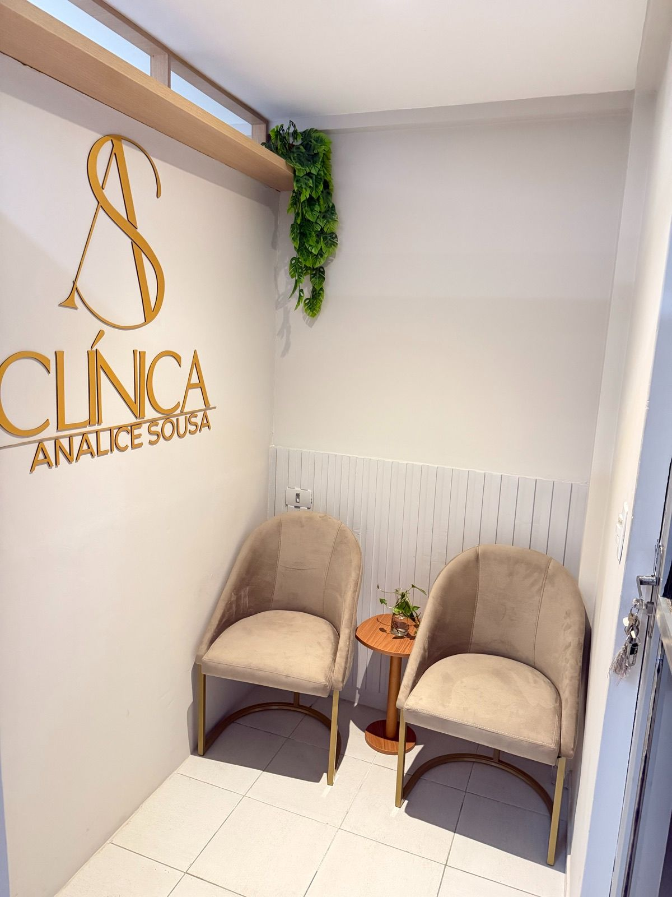
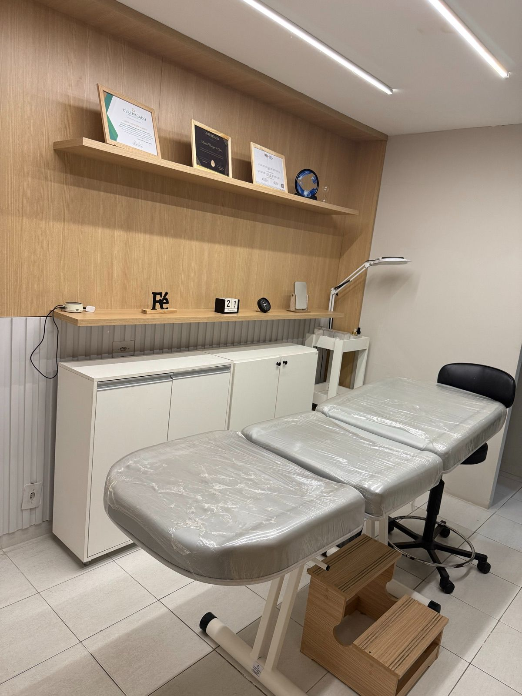

Pilar um
Autoestima
Voltar a se sentir à vontade com o próprio corpo, na praia, no vestiário e na intimidade. O objetivo é confiança e bem-estar, com um resultado que pareça seu.
Manaíra, João Pessoa
Protocolo personalizado para a sua anatomia e a sua expectativa, com resultado natural, segurança e discrição. Procedimento de consultório, com anestesia local.
+5anos
de atuação em estética íntima masculina
+1000
atendimentos realizados em consultório
40–60min
de procedimento, com anestesia local
1paciente
por horário, em consultório próprio em Manaíra
Se você pesquisou, leu e fechou a aba mais de uma vez, você não é exceção. Boa parte de quem chega ao consultório passou anos tentando disfarçar um incômodo que nunca contou para ninguém.
Na avaliação buscamos o seu maior motivo para chegar até nós. Ela existe para entender a sua expectativa, examinar a região e dizer com clareza o que o protocolo alcança e o que não alcança no seu caso.
Você se reconhece?
As situações que mais aparecem na primeira conversa. Nenhuma delas é rara.
Evitar a sunga na praia e na piscina.
Trocar de roupa de costas no vestiário.
Passar anos tentando disfarçar a desproporção.
Ter vontade de fazer, mas medo do procedimento e de com quem fazer.
Nenhuma delas é motivo de vergonha. É motivo de avaliação.
Método próprio
Criado por Analice Sousa, o método parte de uma ideia simples: o resultado vem de conhecimento anatômico, estudo e técnica, não da quantidade de produto aplicada. Cada protocolo é desenhado para uma pessoa só.
Pilar um
Voltar a se sentir à vontade com o próprio corpo, na praia, no vestiário e na intimidade. O objetivo é confiança e bem-estar, com um resultado que pareça seu.
Pilar dois
Avaliação detalhada antes de qualquer aplicação, técnica em camada específica, material reversível e acompanhamento no retorno. Tudo explicado antes de você decidir.
Os quatro princípios do método
Protocolo personalizado para a anatomia e a expectativa de cada paciente.
Resultado natural, sem exageros.
Técnica e conhecimento anatômico antes de volume.
Discrição do primeiro contato ao retorno.
O protocolo
Procedimento estético feito em consultório, com anestesia local. Um dos protocolos é o ácido hialurônico, aplicado em uma camada específica para aumentar a espessura, deixar a região mais relaxada e melhorar a estética local.
Ganho de volume pela aplicação em camada específica.
Efeito sobre a aparência e o aspecto local.
Contorno e proporção da região, avaliados caso a caso.
Com anestesia local. Sem corte e sem internação.
Tempo médio da sessão, do preparo à finalização.
Ácido hialurônico absorvível, com possibilidade de ser dissolvido.
Quem atende
Fisioterapeuta, com especializações em harmonização íntima masculina. Criadora do Método AS®.
Há mais de cinco anos, Analice atende homens que chegam com uma pergunta guardada por muito tempo. Mais de mil atendimentos depois, a conduta continua a mesma: ouvir primeiro, examinar com cuidado e só então indicar um caminho.
No consultório, conhecimento anatômico, estudo e técnica pesam mais do que a quantidade de produto. O protocolo é pensado para a sua anatomia e a sua expectativa, para que o resultado seja natural e feito com segurança e responsabilidade.
O consultório
Consultório próprio em Manaíra, com horário individual. Você é recebido com calma, sem sala de espera cheia e sem precisar explicar a ninguém o motivo da visita.


Como funciona
Você chama no WhatsApp e agenda a avaliação. O retorno é direto, sem questionário longo.
Exame da região e conversa sobre a sua expectativa, com tudo explicado em detalhes. É aqui que sai o protocolo indicado e o valor exato do procedimento.
Feito em consultório, com anestesia local, entre 40 e 60 minutos.
Você sai com as orientações por escrito e com o retorno agendado para acompanhar o resultado.
Depoimentos
Mensagens recebidas pelo WhatsApp e publicadas com autorização. Por sigilo, a identificação é feita apenas por iniciais e idade.
Há muito tempo a aparência do meu pênis me incomodava. Por ser fino e desproporcional, nunca me permitiu usar uma sunga na praia ou na piscina. Acabei me acostumando a tentar disfarçar.
Fui até o consultório com medo, confesso. Mas depois de uma avaliação e de uma conversa explicando tudo, decidi realizar o procedimento.
Hoje, 9 dias após o procedimento, não tenho qualquer dúvida de que foi a decisão mais acertada. Estou sem palavras para descrever como estou feliz e satisfeito com o resultado.
Autoestima se constrói com segurança.
Dúvidas
Não achou a sua? Pergunte no WhatsApp.
O procedimento é feito com anestesia local. Você sente a manipulação, mas o desconforto é pontual e controlado durante a sessão.
A própria Analice Sousa, fisioterapeuta (Crefito 390067-F), com especializações em harmonização íntima masculina e criadora do Método AS®. Ela conduz a avaliação, o procedimento e o retorno.
Em média entre 12 e 18 meses, podendo variar de acordo com o metabolismo individual, a prática de atividades físicas e a resposta de cada organismo.
Sim. Por ser feito com ácido hialurônico, o procedimento pode ser revertido com a aplicação de uma enzima chamada hialuronidase, caso necessário.
A rotina de trabalho pode ser retomada já no dia seguinte. São recomendados apenas cuidados com atividades físicas intensas e abstinência sexual temporária por alguns dias.
Não. O produto é aplicado no plano subcutâneo e superficial, sem atingir os corpos cavernosos nem as estruturas responsáveis pela ereção e pela sensibilidade.
A avaliação presencial é paga e tem valor próprio, informado no primeiro contato. O valor do procedimento depende do protocolo indicado e da anatomia de cada paciente, e é definido com transparência na avaliação.
Homens adultos, em boas condições gerais de saúde, que queiram harmonizar a estética da região íntima e que não tenham contraindicações identificadas na avaliação.
Sim, em prontuário individual, sob sigilo profissional e em conformidade com a LGPD. Nada é compartilhado sem a sua autorização.
Agendamento
O agendamento é feito por WhatsApp, em horário comercial. A avaliação é presencial e tem valor próprio, informado no primeiro contato.
Clínica Analice Sousa Av. João Câncio da Silva, 1676, Sala 302, segundo andar